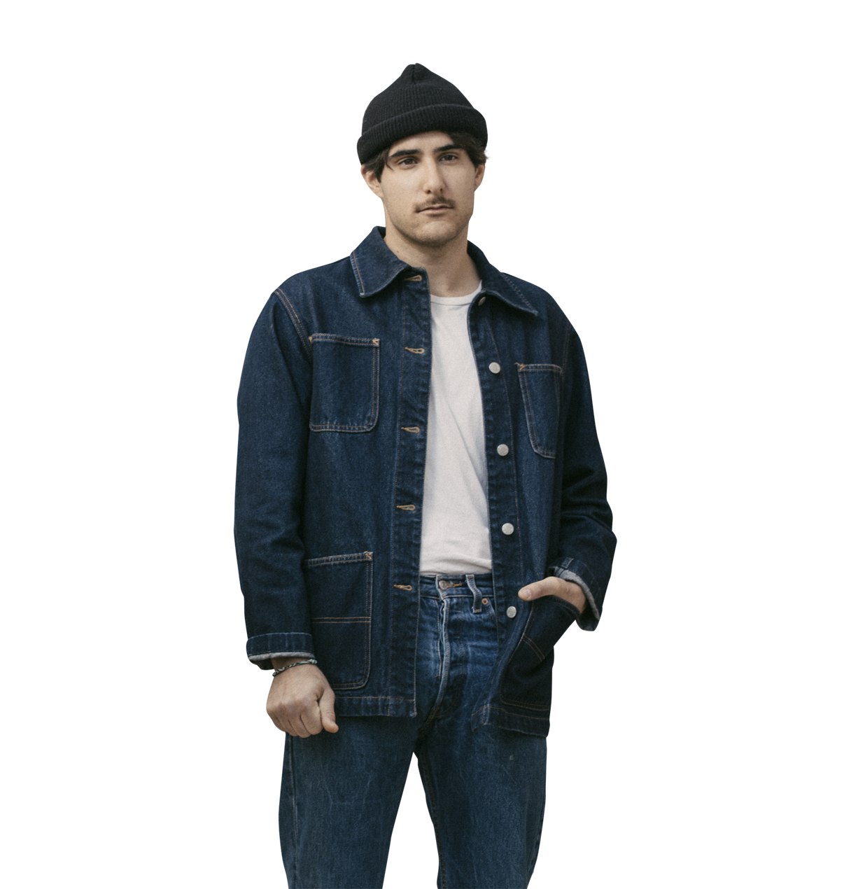
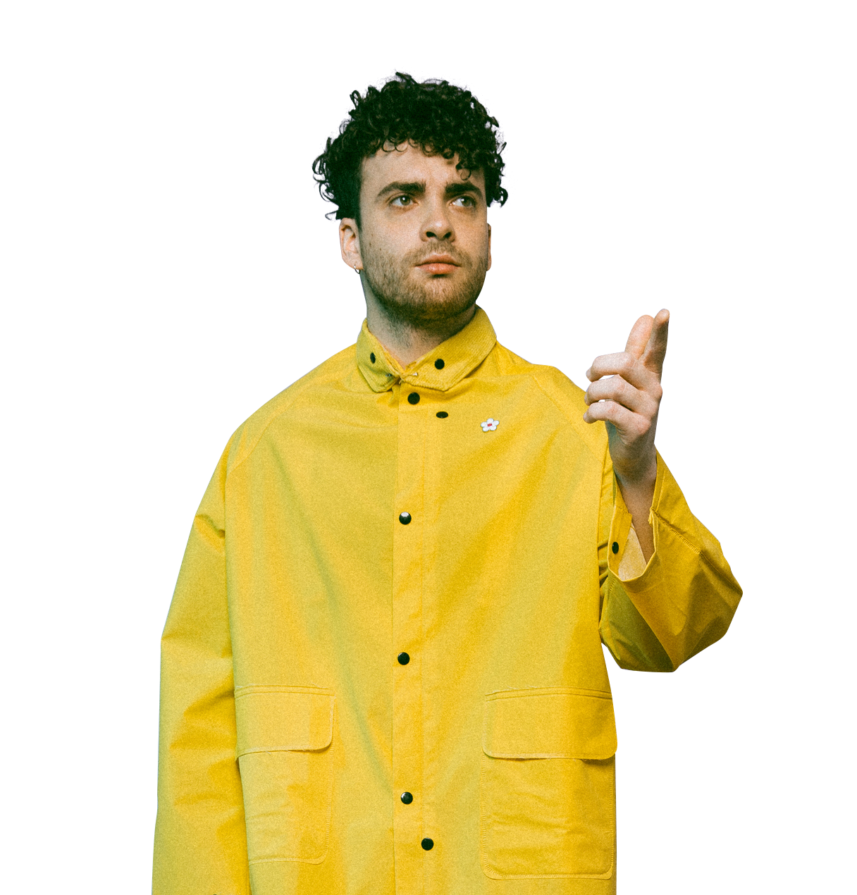

zac farro
Zac, born June 4, 1990, is the drummer in the band, and is from New Jersey. He has played the drums since he was 9, and was a founding member of Paramore. Instagram. Twitter.
hayley williams
Hayley, born December 27, 1988, is the lead singer in the band, and is from Mississippi. She took vocal lessons at 13, and was a founding member of Paramore. Instagram. Facebook.
